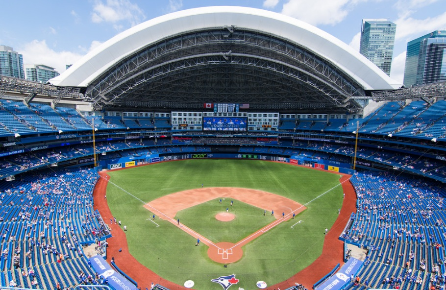
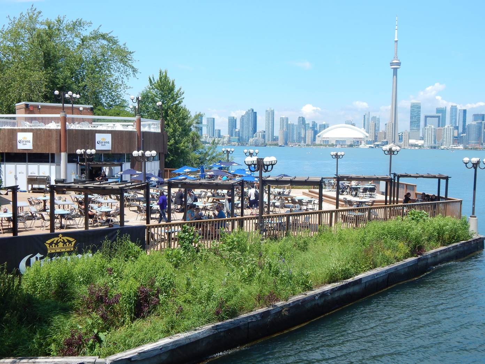

Toronto City Guide
Royal Ontario Museum
The Royal Ontario Museum is Canada's largest and most visited museum filled with art and history, It attracts more than one million visitors every year. The museum is north of Queen's Park in the University of Toronto District, with it's main entrance on Bloor Street West.
Rogers Centre
The Rogers Centre is a multipurpose stadium in Downtown Toronto situated just southwest of the CN Tower, it is home to the Toronto Blue Jays. Previously the stadium served as home to the Toronto Argonauts.
Eaton Centre
The Eaton Centre is North America's busiest mall, it has a huge selection of shops and restaurants. The main portion of the Toronto Eaton Centre is bounded by Yonge Street on the east, Queen Street West on the South and Dundas Street West on the north. the flagship location is the Hudson's Bay department store chain.

Toronto Islands
The Toronto Islands are a chain of small islands in Lake Ontario, the island is a popular recreation destination. The island community is considered to be the largest urban car-free community in North America, although some service vehicles are permitted.
/>Toronto Zoo
The Toronto Zoo is Canada's premier zoo known for its interactive education and conservation activities. It is Canada's national leader in saving wildlife to ensure the rich diversity of nature for future generations. The zoo is set in the beautiful Rouge Valley. The main entrance is located on Meadowvale Road, North of highway 401
/>